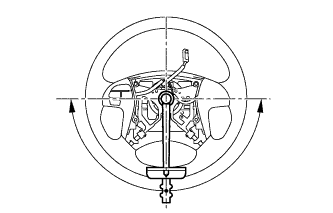
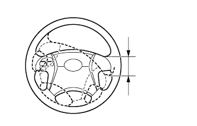

Electric Power Steering System Function Inspection |
| 1. Inspect Stationary Steering Effort |
)Stop the vehicle on a level, paved surface and set the steering wheel in the straight-ahead position.
Disconnect the cable from the negative battery terminal. (see)
Remove the horn button. (see)
Connect the cable to the negative battery terminal.
Using a torque wrench, check that the steering wheel set nut is not loose.
Start the engine.
 |
Turn the steering wheel 1/4 turn(s) to the right from the straight-ahead position, and check the torque while turning.
Check the left turn in the same way.
Set the steering wheel in the straight-ahead position.
Disconnect the cable from the negative battery terminal. (see)
Install the horn button. (see)
Connect the cable to the negative battery terminal.
Clear the DTCs of the SRS airbag system. (see)
Inspect the airbag warning light. (see)
Perform the setting procedure for battery terminal disconnection/reconnection. (see)
| 2. Inspect Steering Wheel Free Play |
Start the engine.
Set the steering wheel in the straight-ahead position.
 |
Lightly move the steering wheel with your fingers and check the free play.